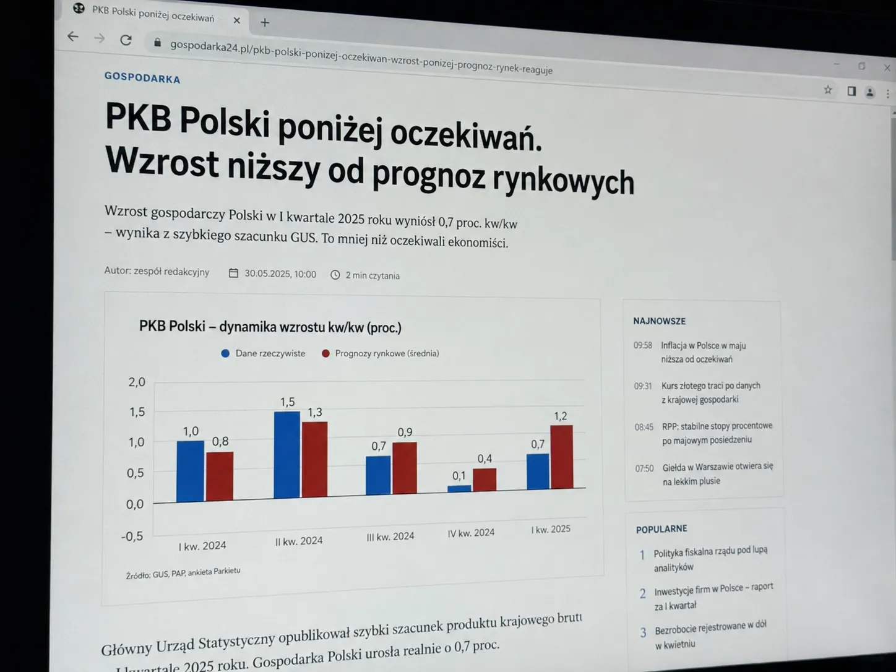

Karolina Zawadzka@karolina_zmiana · 2 lip 2026
Wzrost gospodarczy słabszy, niż zapowiadano. Ceny rosną, czynsze rosną, rachunki rosną, a politycy nadal opowiadają o „sukcesie”. Kto jeszcze wierzy w te konferencje?

Zadanie indywidualne
Przejrzyj całą historię konta. Zwróć uwagę na tematykę wpisów, źródła, relacje z innymi użytkownikami, sposób wywoływania emocji oraz możliwy cel działania. Nie oceniaj profilu wyłącznie na podstawie zgodności lub niezgodności z poglądami autora.
Omówienie po odpowiedzi
Przykład został zainspirowany kontem Lauren Lloris, które w materiale źródłowym opisano jako personę prowadzoną przez lub na rzecz irańskiego Korpusu Strażników Rewolucji Islamskiej. Oryginalne konta udawały lewicowo nastawionych mieszkańców Wielkiej Brytanii i koncentrowały się na tematach mających dzielić odbiorców. W tej adaptacji persona udaje polską aktywistkę ze Śląska.
Osiem kolejnych wpisów dotyczy wyłącznie sporów politycznych, światopoglądowych i geopolitycznych. Profil nie pokazuje żadnych trwałych relacji ani codzienności.
Rząd, Kościół, transformacja Śląska, uchodźcy i Palestyna to kwestie, które naturalnie wywołują silne reakcje i mogą być wykorzystane do pogłębiania konfliktu.
„TAK czy NIE?”, „kto się zgadza?” i proste wskazanie winnego ograniczają niuanse. Celem jest reakcja, udostępnienie i spór, nie rzetelna wymiana argumentów.
Katowice, Śląsk i polskie hasła budują wrażenie, że konto należy do osoby „stąd”. Sama lokalizacja w bio nie potwierdza jednak tożsamości.
Polski kontekst
Profesjonalna persona może udawać osobę lewicową, prawicową, regionalistę, patriotę albo obrońcę konkretnej grupy. Najważniejszy jest efekt: wzrost nieufności, złości i przekonania, że rozmowa z drugą stroną nie ma sensu. Dlatego nie oceniamy konta po samych poglądach, lecz po powtarzalnym sposobie działania.